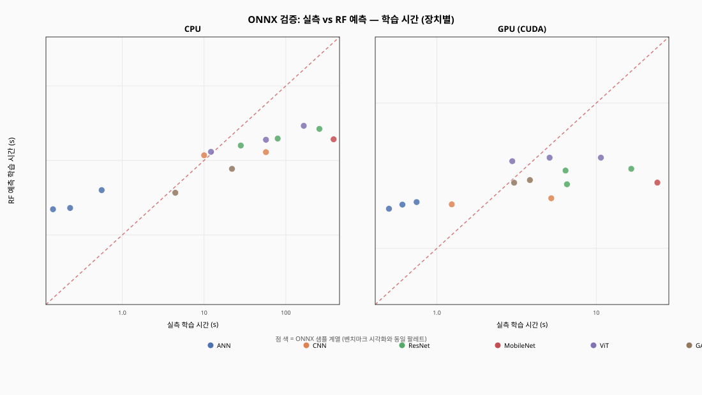
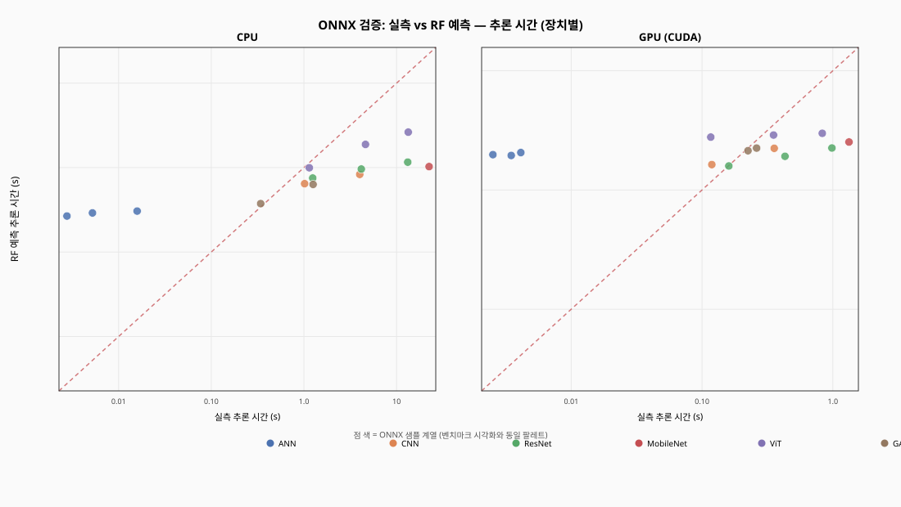
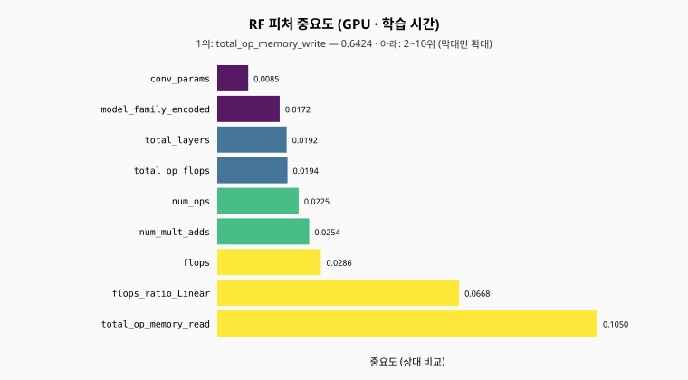

Cursor·VS Code·PyCharm 등에서 REPORT.md를 미리보기 할 때 로컬 SVG가 표시되지 않는 경우가 있습니다 (미리보기 보안 정책).
이 페이지는 같은 폴더의 images/*.svg를 브라우저로 보여 줍니다.
이 파일을 탐색기에서 더블클릭하거나, 드래그해 Chrome/Edge에 넣으면 됩니다.

python scripts/visualize_results.py 의 fig5와 같이 장치를 나누고, 점 색은 ONNX 파일명 기준 모델 계열(ANN/CNN/ResNet/ViT/GAN)입니다.
빨간 점선은 완벽 예측선(y=x).

